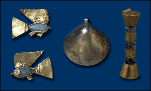

After many weeks, the jeweller shows you what he made. He made two fish amulets from green feldspar and gold, a cylinder amulet made of amethyst and gold, and an oyster shell amulet made of electrum.

These amulets and charms are from the Middle Kingdom (2055 B.C. to 1650 B.C.). The ancient Egyptians believed that certain amulets and charms protected them from the dangers of everyday life.
The fish amulets were called ‘nekhau'. They were meant to protect the wearer against drowning in the Nile. The ancient Egyptians often attached these amulets to the hair or clothing of children so they would be safe.